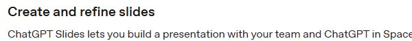

챗GPT에서 발표 자료를 함께 고친다
오픈AI의 ChatGPT Slides는 대화와 파일을 바탕으로 발표 자료를 만들고, 그 자료를 사람과 AI가 함께 수정하는 기능이다. 핵심은 슬라이드 초안을 받는 데서 끝나지 않는다는 점이다. 글과 그림을 직접 바꾸고, 동료가 같은 자료를 보며 의견을 남기고, 필요한 부분만 챗GPT에 다시 맡길 수 있다.

작업 공간의 이름은 Space다. 완성한 문서와 슬라이드, 올려 둔 자료를 모아 두는 곳이다. 채팅창에서 설명을 주고받는 동안 결과물이 별도 파일로 흩어지는 대신, 편집할 원본을 함께 열어 놓는 방식이다. 공식 Space 안내는 문서·발표 자료·스프레드시트를 같은 공간에서 다룬다고 설명한다.
발표 자료를 자주 만드는 사람에게 중요한 변화는 첫 초안의 속도만이 아니다. 회의 직전 숫자 하나가 바뀌고, 발표 대상이 달라지고, 동료가 문장을 고쳐 달라고 할 때 얼마나 수월하게 수정하는지도 중요하다. 이번 기능은 이런 후반 작업을 챗GPT 안으로 가져왔다.
“자료를 만들어 줘” 다음 작업까지 이어진다
공식 시작 안내에 따르면 대화 내용, 목차, 원본 파일을 출발점으로 사용할 수 있다. 원하는 발표 대상과 목적, 분량을 함께 알려 주고, 참고할 발표 자료나 템플릿도 붙일 수 있다. 빈 화면에서 디자인부터 고민하기보다 사용할 내용과 듣는 사람을 먼저 정하는 접근이다.
가상의 예로 작은 교육회사의 월간 보고를 생각해 보자. 수강 인원표와 상담 메모를 올린 뒤 “팀 회의에서 볼 6장짜리 보고 자료를 만들어 줘. 신청자 수, 실제 참석자 수, 다음 달 결정할 일을 나눠 줘”라고 요청할 수 있다. 여기서 6장과 교육회사 사례는 독자가 연습하기 위한 예시이며 실제 생성 결과를 뜻하지 않는다.
초안을 받은 다음에는 전부 다시 만들 필요가 없다. 표의 수치, 문구, 그림과 도형을 사람이 직접 손볼 수 있다. 특정 요소를 선택해 Request edits를 누르면 해당 부분을 AI에 고쳐 달라고 할 수도 있다. 자료 전체의 길이나 설명 수준을 바꾸는 요청과, 숫자 하나를 바로잡는 요청을 나누어 쓰는 것이 좋다.
예를 들어 “3쪽 참석률을 ‘실제 참석자 수 ÷ 신청자 수 × 100’으로 다시 계산해 줘. 다른 쪽의 문구는 유지해 줘”처럼 바꿀 대상과 남길 대상을 함께 적는다. 이는 새 기능의 숨은 명령이 아니라 수정 범위를 명확히 하는 작성 방법이다. 필요한 변경만 분명히 말하면 사람이 결과를 대조하기도 쉽다.

공동 편집에서 달라지는 것은 파일보다 대화다
공동 작업 안내는 슬라이드를 읽기 권한 또는 편집 권한으로 공유한다고 설명한다. 편집 권한이 있는 동료는 같은 자료를 동시에 수정할 수 있다. 공유 댓글에서 서로 의견을 주고받거나 ChatGPT 또는 dot을 지목해 수정을 요청할 수 있다. dot은 계속되는 일을 맡기는 별도의 AI 에이전트다.
슬라이드에는 현재 댓글만 허용하는 별도 권한이 없다. 문서 페이지에서 제공하는 권한과 슬라이드의 권한을 같은 것으로 생각하면 혼동하기 쉽다. 의견만 받고 싶은 사람에게도 편집 권한을 줄지, 읽기 권한을 주고 다른 경로로 의견을 받을지 정할 필요가 있다.
이렇게 한 원본에서 고치면 “최종”, “진짜 최종”, “수정본” 파일이 따로 쌓이는 일을 줄일 여지가 있다. 대신 여러 사람이 동시에 다른 방향으로 수정하지 않도록 담당 부분을 나누는 일은 남는다. 자료의 수치 담당자와 문장 담당자가 누구인지 정해 두면, AI가 만든 변경을 누가 확인할지도 분명해진다.
AI에게 댓글로 지시할 때도 목적을 구체적으로 쓰는 편이 낫다. “더 좋게”보다 “이 장의 결론을 첫 줄로 옮기고, 상세 수치는 표에 남겨 줘”가 확인하기 쉽다. 공식 에이전트 안내도 어떤 부분을 바꾸고 이미 결정한 사항은 무엇인지 알려 주는 방식을 권한다.
공유 전에 원본 자료와 숫자를 한 번 더 본다
공유한 슬라이드에 들어간 정보는 그 슬라이드를 볼 수 있는 사람에게 보인다. 원본 문서의 접근 권한이 좁더라도, 내용을 복사하거나 요약해 넣은 새 자료까지 자동으로 비공개가 되는 것은 아니다. 관리자 안내는 연결된 원본 파일의 권한과 새 페이지에 복사된 내용의 공개 범위를 구분한다.
따라서 회사에서 처음 시험할 때는 공개 가능한 연습 자료가 적합하다. 고객 이름과 계약 금액이 있는 실제 파일을 바로 올리는 대신, 익명으로 바꾼 표와 공개된 문서로 초안·수정·공유 과정을 한 번 확인한다. 화면이 익숙해진 뒤 회사의 승인된 계정과 자료 정책에 맞춰 업무 범위를 넓히면 된다.
검토할 때는 문장보다 숫자를 먼저 볼 수 있다. 표에 120명이 적혀 있는데 설명에는 150명이라고 쓰였는지, 비율의 분모를 무엇으로 잡았는지, 축을 잘라 차이를 과장한 그래프는 없는지 살핀다. 디자인이 그럴듯할수록 이런 불일치가 눈에 잘 들어오지 않는다. 원본 표와 최종 장을 나란히 비교하는 편이 확실하다.
웹·모바일·Windows의 쓰임이 다르다
공식 안내에서 모바일은 대화로 슬라이드를 만들고 보는 용도로 설명한다. 요소를 직접 편집할 때는 웹 또는 데스크톱을 사용한다. Windows 앱에서 공동 편집 자료 대신 PowerPoint 파일이 만들어진다면 클라우드 모드로 바꾸거나 웹에서 Space 슬라이드를 만들라는 별도 안내도 있다. 파일이 생겼다는 사실과 공동 편집 자료가 열렸다는 사실을 구분할 부분이다.
웹에서는 PowerPoint, PDF, Google Slides로 내보낼 수 있다. 슬라이드를 바로 발표하면서 발표자 메모를 보는 방법도 있다. 다른 프로그램에서 열 파일을 받았다면 발표 전에 그 프로그램에서 다시 재생해 보자. 글꼴과 줄바꿈, 표의 폭이 달라지면 내용은 맞아도 전달이 어려워진다.
이 기능을 쓰려면 해당 계정에서 Space가 활성화되어 있어야 한다. 조직 계정은 관리자의 설정도 적용된다. 이 글은 공식 기능 문서를 확인한 설명이며, 독자마다 같은 메뉴가 보인다고 확인한 실사용 후기는 아니다. 화면에 없는 메뉴를 찾느라 오래 헤매기보다 계정과 작업 공간의 제공 상태부터 보는 편이 빠르다.
좋은 첫 시험은 짧고 수정할 이유가 있는 자료다
처음부터 수십 장짜리 보고서를 맡기기보다 5~8장 안팎의 작은 자료에 고쳐야 할 조건을 하나 넣어 보자. “대상을 임원에서 신입 직원으로 바꿔 설명해 줘”, “비용 표는 유지하고 결론만 앞쪽으로 옮겨 줘”처럼 결과를 눈으로 대조할 수 있는 과제가 적합하다. 이는 편집부가 제안하는 연습 방식이다.
한 번 만들고 끝내는 시연보다, 원본에서 잘못 옮긴 숫자를 발견하고 특정 장만 고치는 과정이 실무 가치를 잘 보여 준다. ChatGPT Slides의 유용함은 보기 좋은 초안을 받는 순간보다, 사람이 근거를 확인하면서 동료와 같은 자료를 끝까지 다듬는 과정에서 판단할 수 있다.
출처와 더 읽을 자료
- ChatGPT Space 개요
- Space에서 슬라이드 만들고 수정하기
- 슬라이드 공동 편집과 권한
- Space에서 AI에 수정 요청하기
- 조직의 Space·슬라이드 관리
- 공식 음성으로 슬라이드 만드는 시연 안내
대표 이미지는 제품명과 기사의 핵심을 편집부가 배치한 설명용 표지이며 실제 제품 화면이 아니다. 본문의 원본 화면·영상은 각 자료 아래에 출처와 제공 주체를 표시했다. 직접 실습하지 않은 회사 시연을 편집부의 실행 결과로 표시하지 않았다.